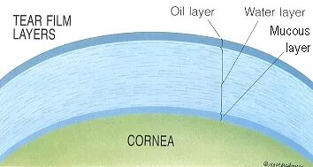
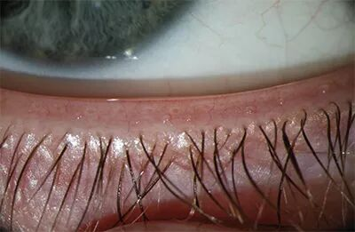
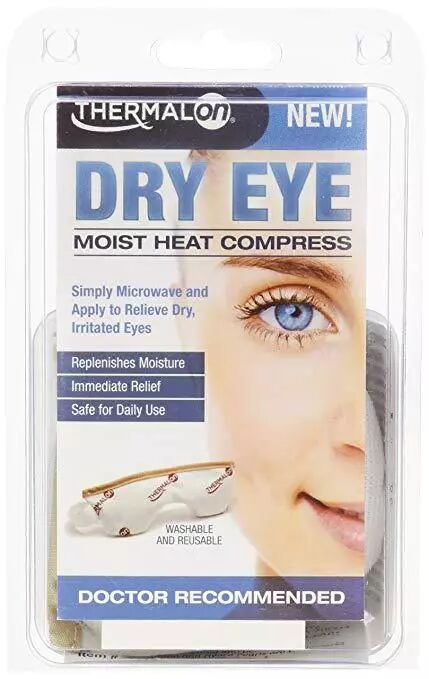
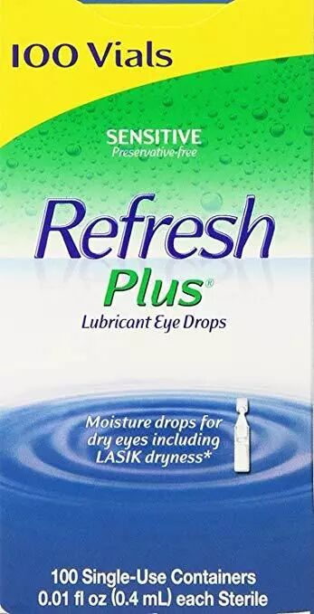

作为一个程序员，我的用眼习惯不太好，常常因为工作或者打游戏，在电脑前面一坐就是好几个小时。时间长了以后，眼睛就会感觉到干涩，发痒，不自觉地开始揉眼睛。
有一次检查眼睛的时候，我的眼科医生表示，我的眼睛似乎患上了干眼症，需要采取相应的治疗。从此我开始了与这个病症抗争的大半年。
干眼症是怎么引起的？
我们都知道眼睛的表面其实是很湿润的，按理说这样湿润的表面敞开在空气中，水分会很快被蒸发完才对。不过眼睛的表面有些特殊，眼睛的水层表面，其实还附着着一层油，避免了眼睛表面的水过快地蒸发。

那眼睛表面的油是哪里来的呢？其实我们眼睛的下睫毛以上的眼皮，以及上睫毛以下的眼皮之上，密密麻麻排了很多个名字叫meibomian gland的油脂腺体。每当我们眼睛眨眼的时候，眼皮的挤压就会把腺体中的油脂挤出来，在我们的眼睛表面形成了一层油水保护层。

然而，当我们非常专注的时候，比如长时间在电脑前工作的时候，我们的眨眼频率会下降，从而导致我们眼皮上的这些腺体被挤压的频率下降，进而导致油脂腺体的堵塞。
这些腺体堵塞了以后，眼睛的表面就无法有效地形成健康的水油层了，眼睛表面的水也会很快地被蒸发。当眼睛没有了水层的保护，我们就会感觉眼睛干涩，甚至刺痛，眼皮也会由于腺体的堵塞，感觉到瘙痒，从而让我们不自觉地揉眼睛。
如何自查干眼症？
既然干眼症的症状是眼睛表面的水层蒸发的过快，我们其实可以尝试着睁开眼睛，看睁开多久以后会刺痛来自查是否有干眼症。一般如果能保持睁开15秒以上没有刺痛的感觉，应该就没有相应的症状。
你也可以留意一下自己早上醒过来有没有眼屎，其实眼屎就是眼睛分泌的油脂干掉以后的残留物，如果干眼症比较严重的话，早上醒来以后眼屎会非常地少。
除此以外，还可以通过观察眼皮上的油脂腺体来自查干眼症的状况。一般来说，由于腺体非常小，用带有照明以及放大功能的化妆镜会比较容易观察到腺体。
用一个消过毒小棒轻轻地挤压上下眼皮闭眼时的接触边，如果看到有小孔中被挤压出透明的液体，则说明腺体健康。如果挤压不出，或者只能挤压出固体状的油脂，则说明腺体已经堵塞了。
如何治疗？
其实不同的医生给出的治疗方法都有些小小的区别，不过基本离不开以下几个主要的步骤。我个人目前采用的是《The Dry Eye Remedy》这本书上推荐的步骤。
首先用一个加热过的眼罩热敷3-10分钟，眼罩的热度只要不烫手就行，越热越好。这一步主要是为了把眼皮上的油脂腺体内的油脂化开。这里用热毛巾也行，但是热毛巾一般只能维持1-2分钟温度，所以中间需要换一下。除此以外，还可以在冲热水澡的时候把眼皮附近好好冲一下，也有同样的效果。

用微波炉加热的眼罩
热敷完后，用一个消过毒的金属小棒或者棉签依此挤压两边上下眼皮上的油脂腺体。一开始如果没有找到油脂腺体的话，建议看一下视频，首先找到这些腺体在眼睛上长在哪儿，然后在化妆镜前观察自己的在哪儿。找到以后，练习用金属小棒或者棉签挤压油脂腺体。做久了以后，慢慢就不需要对着镜子操作了。
这一步如果偷懒的话，也可以用食指沿着上下眼皮的地方挤压。一开始的时候务必确保这样挤压可以对腺体产生作用。
挤压完以后，要把挤压出来的油脂清理干净，用一个消过毒的泡过热水的棉签把两边上下眼皮挤出来的油脂卷走。
最后滴上不带防腐剂的眼药水。注意务必要使用那种每一支分开包装的眼药水，只有这样的眼药水才可以做到不含防腐剂。有的医生会推荐把这种眼药水冷藏，这样子对于眼睛的治疗效果更好。

一次性滴眼液，不含防腐剂
熟练以后，这样的一个流程大约10分钟左右，早晚各一次。只要坚持这个流程，大约1个月以后你就会发现自己早上起来眼屎逐渐变多，眼睛的干涩以及瘙痒症状越来越好转了。
后记
这篇文章其实是想给我的读者朋友提个醒，要是你也是一个电脑或者手机的重度用户，眼睛也经常干涩瘙痒，不如自查一下，要是真的有对应的症状，不如及早行动，把这个困扰你眼睛的问题解决了。 当然最好还是去治疗干眼症的医生那边看一下，他们会有更好的仪器，可以做出更加准确的诊断。